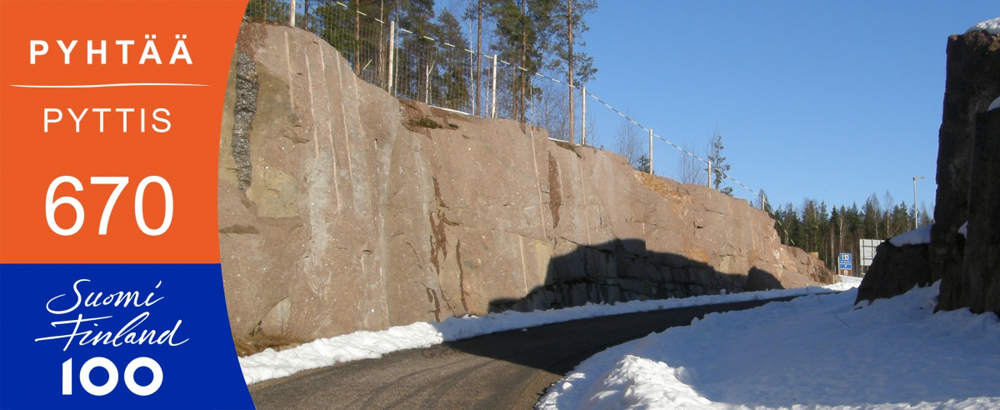
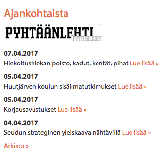
Pyhtäällä ihmisen arjella on inhimilliset mittasuhteet
Pyhtään kunta tarjoaa pienestä koostaan huolimatta toimivat ja ihmisläheiseen elämiseen soveltuvat puitteet. Pyhtää sopii sinulle, joka etsit hyviä palveluja, väljää asumisympäristöä, luonnonläheisyyttä ja mahdollisuutta rauhoittua nykyajan kiireen keskellä. Vaihtelua kaipaaville myös kaupunkitason palvelut löytyvät lyhyen pyrähdyksen päästä Kotkasta, eikä pääkaupunkiseudullekaan ole kuin reilun tunnin ajomatka.
Tulitpa läheltä tai kaukaa, viivyitpä vain hetken tai pysyvästi, toivotamme Sinut tervetulleeksi nauttimaan kanssamme pienistä iloisista asioista – asioista, joiden painoarvo elämän laadun rakentamisessa on hyvin suuri ja jotka tekevät arjesta merkityksellisen.
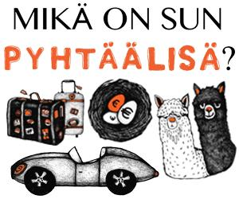
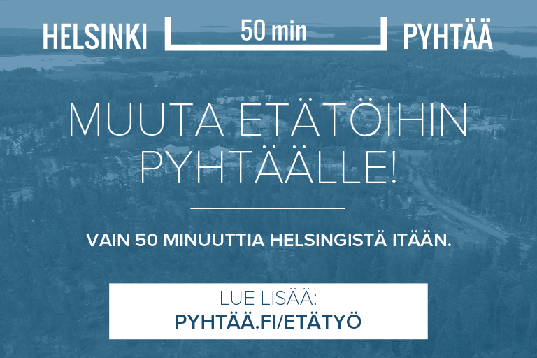
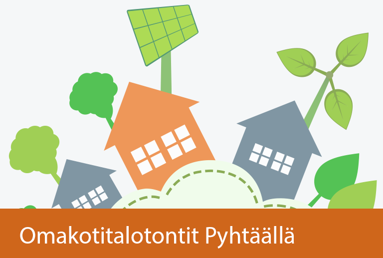


 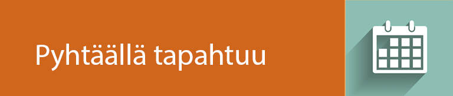
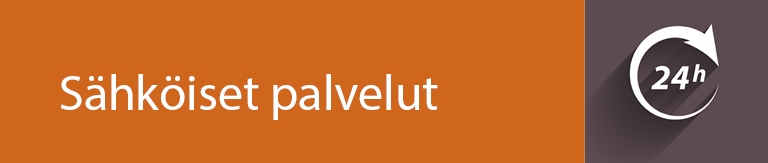
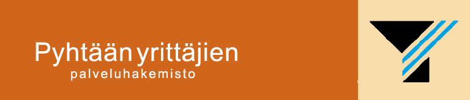
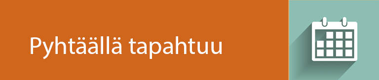
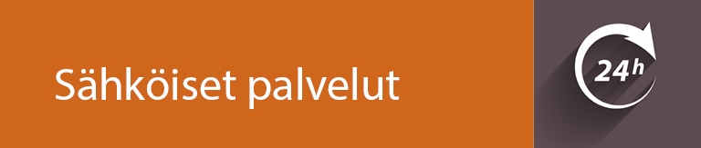
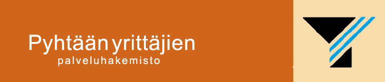